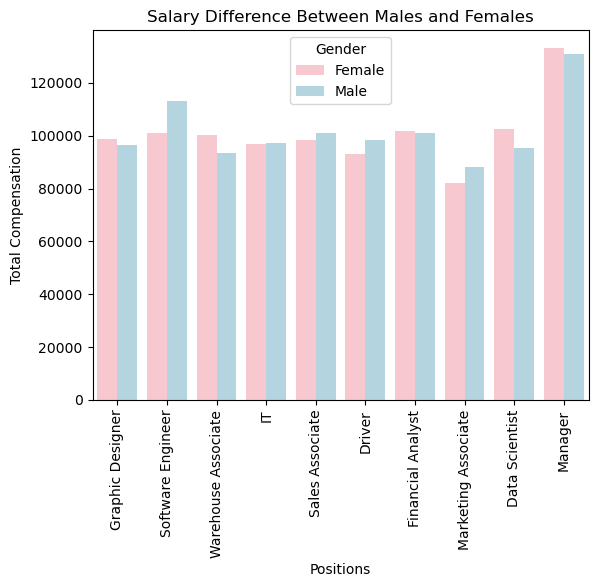

hw-03: Interactive Webpage, and Marks & Channels
test 1
This is vis1:

This is vis2:

This is vis3:
test 2
Vivek will handle this but I am tired rn
Vivek will handle this but I am tired rn
Marks
- Area
Channels
- Position = Horizontal and Vertical
- Horizontal represents positions
- Vertical represents total compensation
- This mappiing choice is good because there are two areas of interest in the visualization.
- Color
- The color represents the gender identity of employees.
- This is a good mapping choice because pink and blue are typically associated with the male and female genders. Using these colors make it easy for users to understand what the graph is trying to convey.
Acknowledgements
- https://www.w3schools.com/html/default.asp
- https://www.w3schools.com/css/default.asp
- https://www.geeksforgeeks.org/html-tags-complete-reference/?ref=lbp
- https://www.kaggle.com/datasets/nilimajauhari/glassdoor-analyze-gender-pay-gap